Example1: Sample Database¶
Sample Database: mysqlsampledatabase.sql.
ให้ Download มาไว้ที่เครื่อง และเปิดโปรแกรม Mysql Workbranch
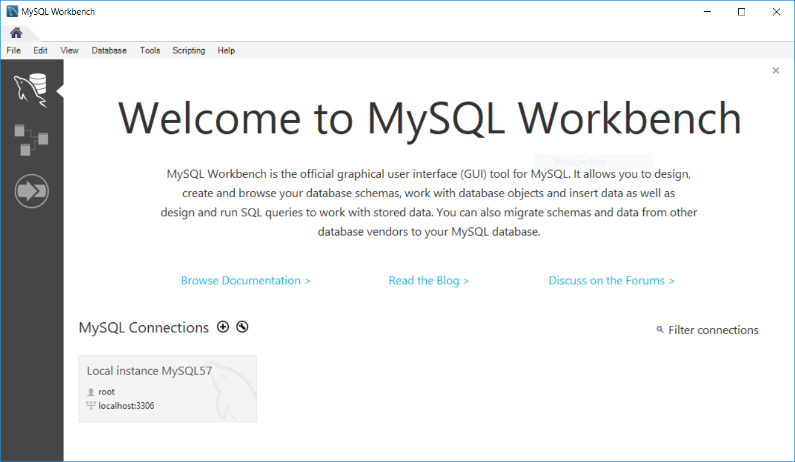click login
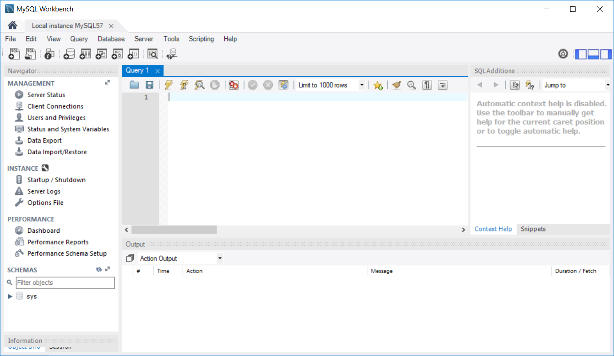เลือก File > Run SQL Script
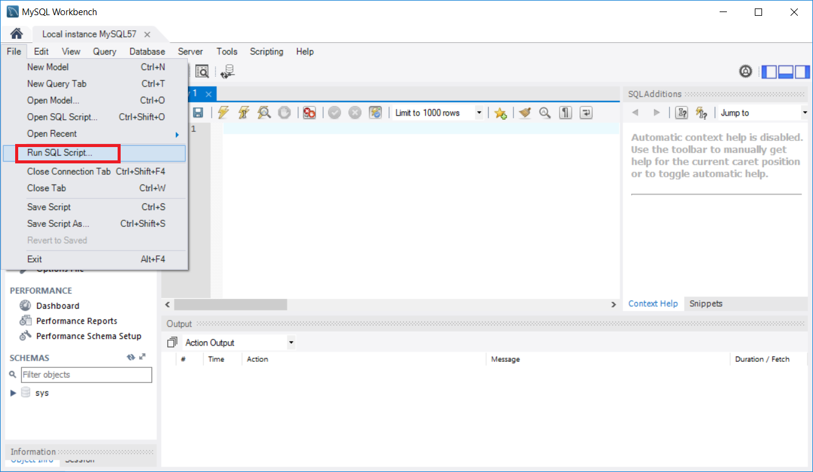เลือก file ที่ Download มา
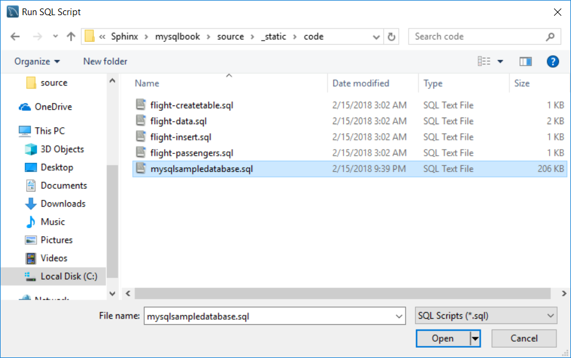แสดง Run SQL Script และ กด run
แสดงผล การ run
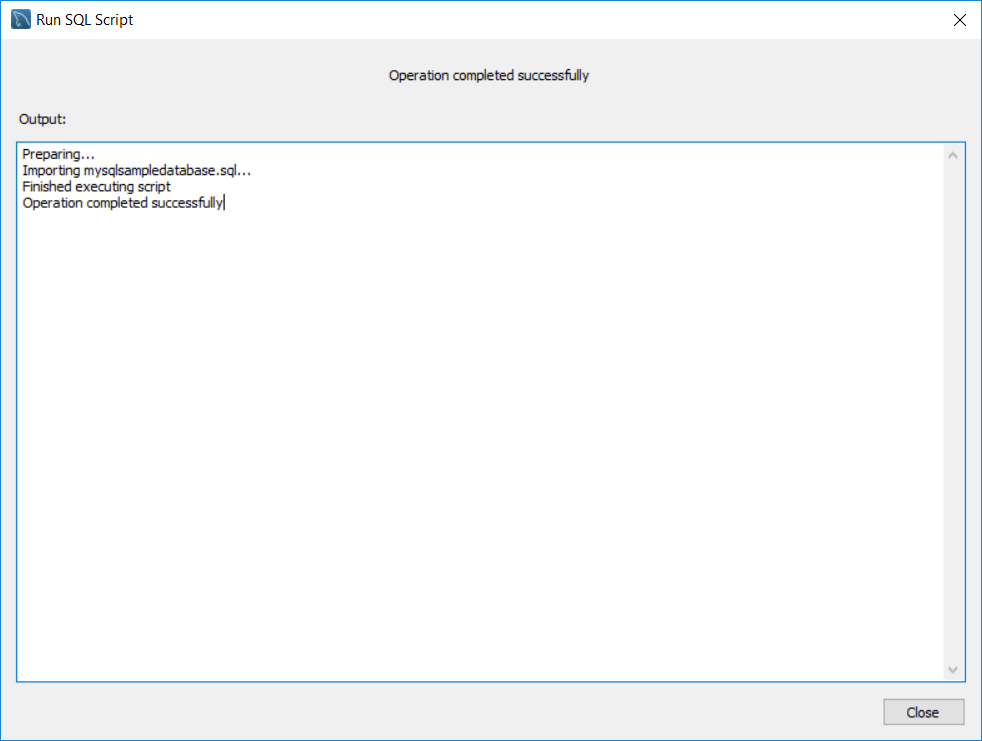กด Refresh link
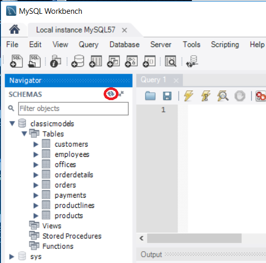หลังจาก import database เรียบร้อยแล้ว เลือก menu Database > Reverse Engineer
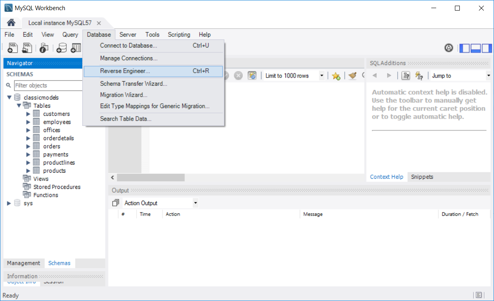จะมีหน้าต่าง Reverse Engineer Database เลือก stored connection ไปยัง เครื่อง server ที่ต้องการเชื่อมต่อ ในตัวอย่างนี้ เครื่อง server อยู่ที่เครื่อง local และ กด next
connect DBMS กด next
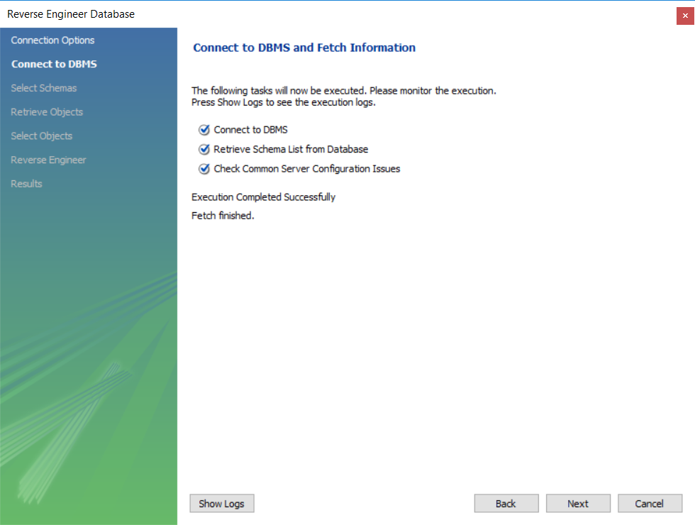เลือก schemas classicmodels
สิ้นสุด กระบวนการ Reverse
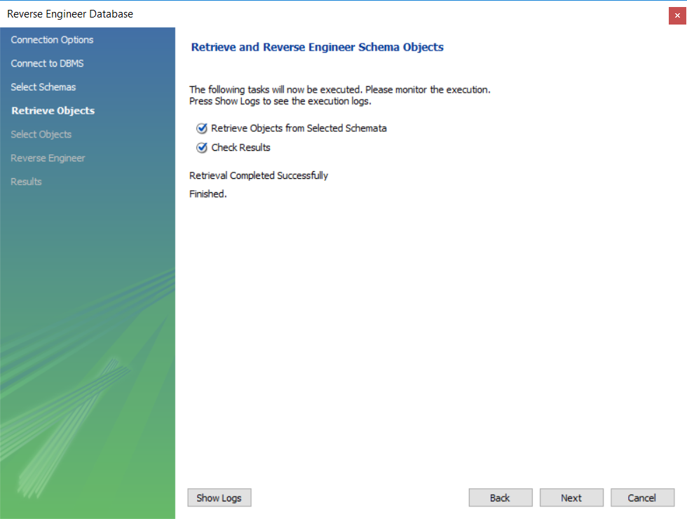กด Execute
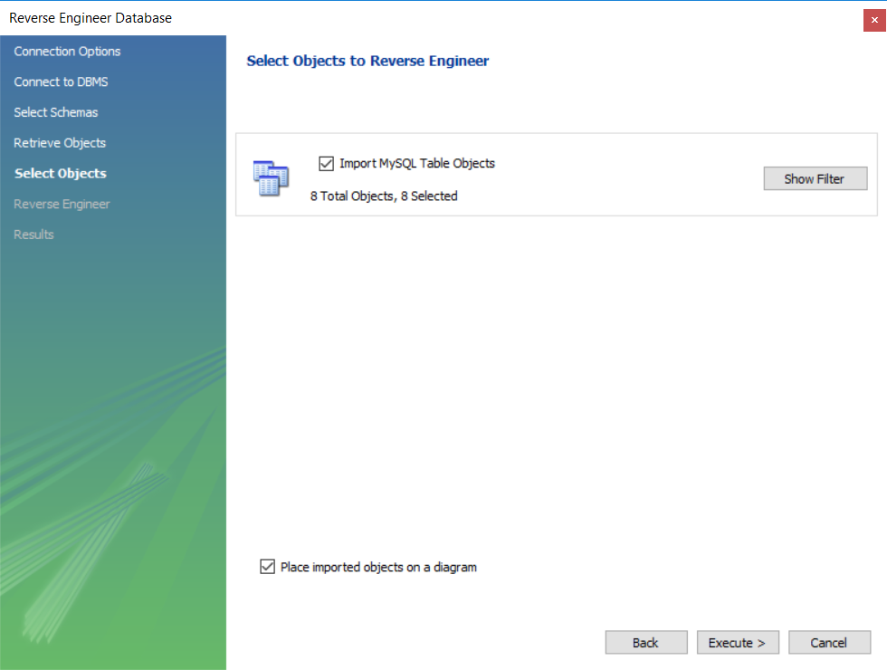 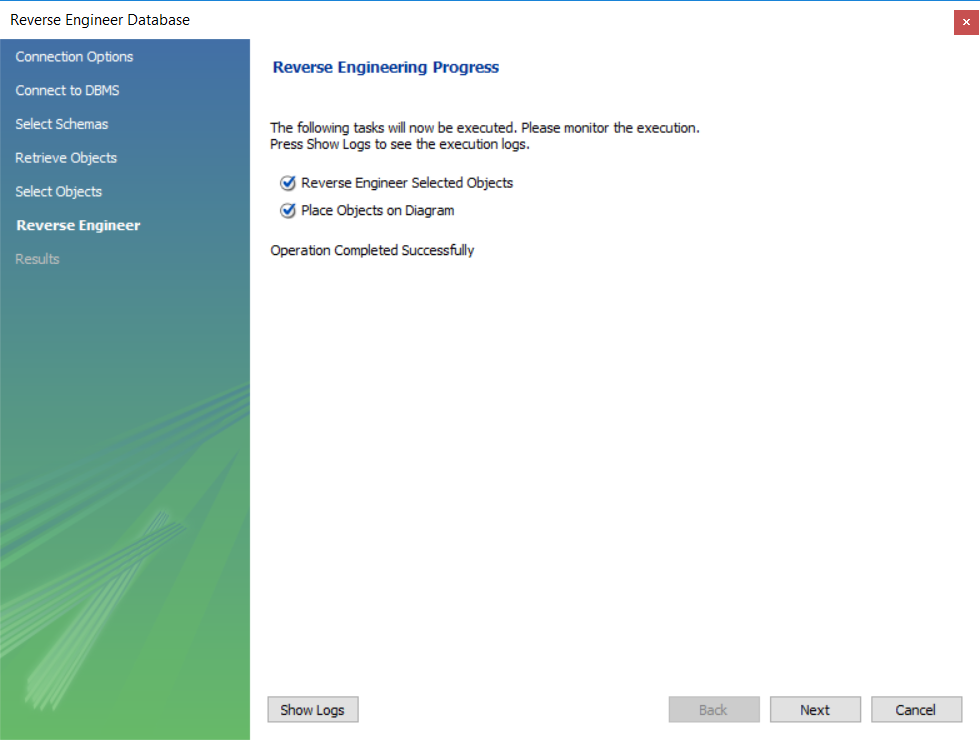 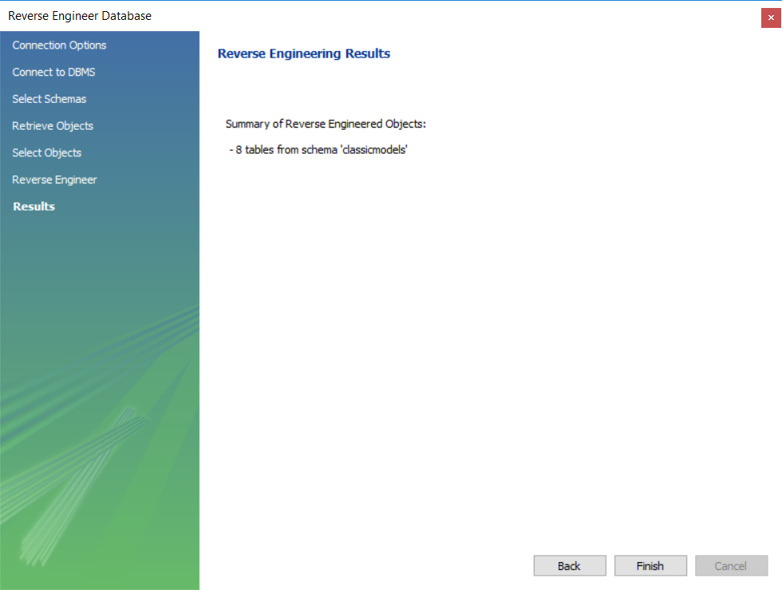เลือก tab ER-diagram
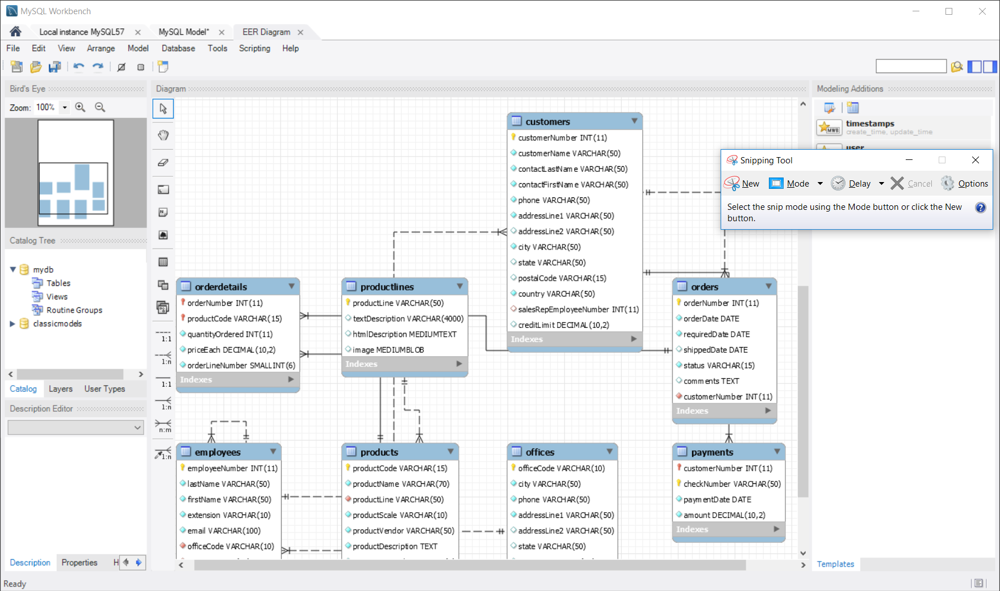